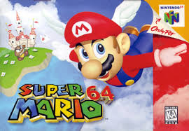
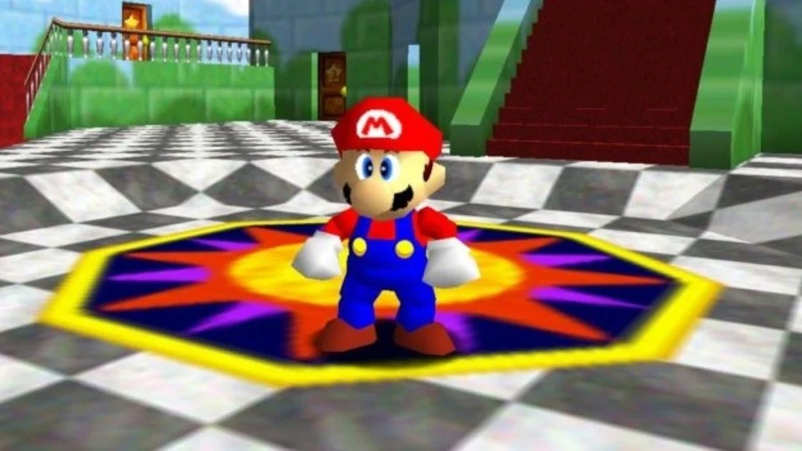
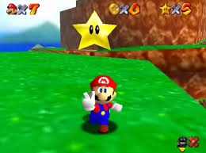
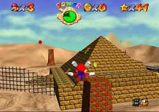

Super Mario 64 (1996)
Super Mario 64 is one of the "classical" games for the Nintendo 64. It is one of the first games for a new generation of games and quite possibly one of the first games for a lot of youngsters. It is considered an absolute masterpiece recieving great reviews from all of the reviewers at the time. The new 3d movement of Mario was praised as revolutionary and it's a must play for all gamers.
  Reviews
| Reviewers | Score |
|---|---|
| IGN | 9.8 |
| Gamespot | 8.4 |
| Metacritic | 9.4 |
| Total | 9.2 |